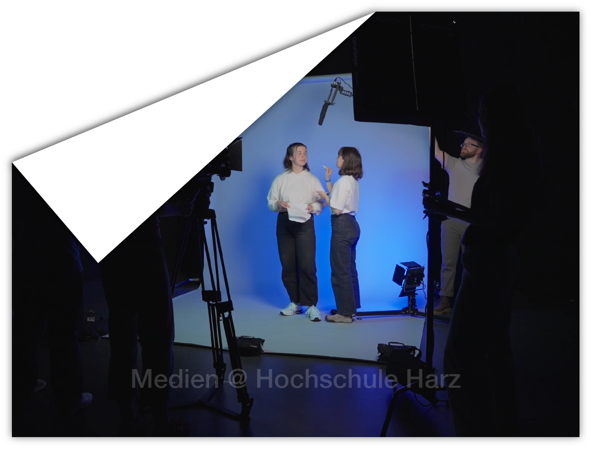
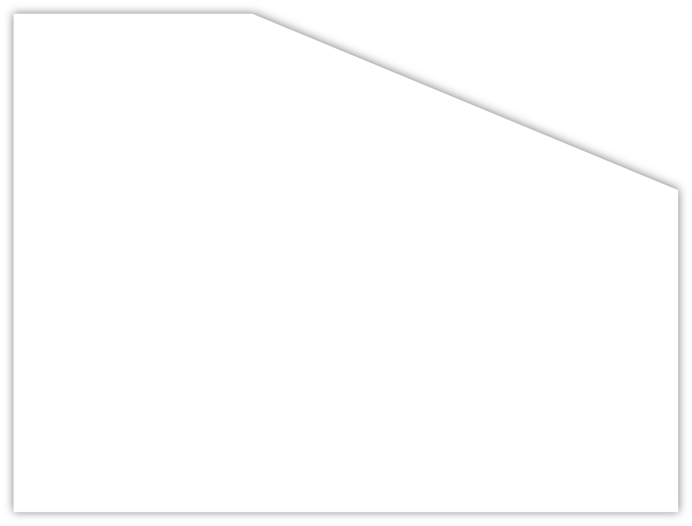
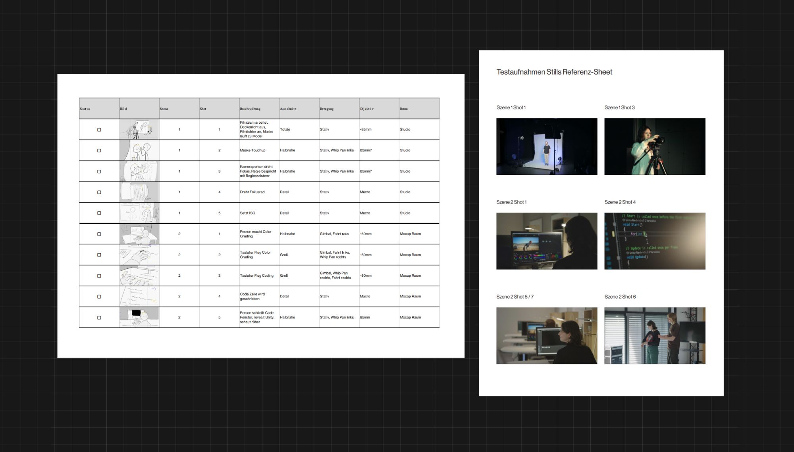

Für einen Trailer / Imagevideo, der auf der neuen Webseite der Medienstudiengänge laufen
soll, habe ich in Zusammenarbeit mit Isabell
Schönhoff ein Video konzipiert und umgesetzt.
Es soll in kurzer Zeit über die Studieninhalte
informieren und gleichzeitig Lust auf diese
machen. Deswegen haben wir auf schnelle Schnitte und dynamische Bewegungen
gesetzt.
Bei der Umsetzung konnte ich nicht
nur gestalterische und technische Kenntnisse
verfestigen, sondern auch Erfahrungen
zu etwas aufwändigeren Produktionen
mit mehreren Stakeholdern sammeln. Für
die Organisation von reibungslosen Drehs
mit der größeren Anzahl an freiwilligen
Darstellenden haben wir vorher mehrere
Test-Shoots durchgeführt, sowie detaillierte (Zeit-)Pläne erstellt.
Da das Video sowohl am Desktop als auch Mobile funktionieren muss, mussten wir für stark unterschiedliche
Seitenverhältnisse planen.
2026
DaVinci Resolve, Blender
Konzeption, Regie, Kamera, Schnitt, Color Grading, VFX: Isabell Schönhoff, Thomas Fritzen Regieassistenz: Ronja Passauer Produktionsassistenz: Malte Lennicke Darstellende weiter unten
Für einen Trailer / Imagevideo, der auf der neuen Webseite der Medienstudiengänge laufen
soll, habe ich in Zusammenarbeit mit Isabell
Schönhoff ein Video konzipiert und umgesetzt.
Es soll in kurzer Zeit über die Studieninhalte
informieren und gleichzeitig Lust auf diese
machen. Deswegen haben wir auf schnelle Schnitte und dynamische Bewegungen
gesetzt.
Bei der Umsetzung konnte ich nicht
nur gestalterische und technische Kenntnisse
verfestigen, sondern auch Erfahrungen
zu etwas aufwändigeren Produktionen
mit mehreren Stakeholdern sammeln. Für
die Organisation von reibungslosen Drehs
mit der größeren Anzahl an freiwilligen
Darstellenden haben wir vorher mehrere
Test-Shoots durchgeführt, sowie detaillierte (Zeit-)Pläne erstellt.
Einstieg in den Trailer. Hier wurde ein Filmset als Kulisse für das Video verwendet. In dem ersten Shot war besonders die Koordination der Darstellenden herausfordernd.
Übergang in eine 3D gerenderte Szene.

Behind the Scenes Dokumente: Seite aus Shotlist neben Stills aus Testaufnahmen.
Credits Darstellende:
Junia Bär, Daria Funk, Runa Passauer,
Emely Worbs, Kilian Ronneburger, Hanna Wolf,
Isabell Schönhoff, Malte Lennicke,
Sebastian Jan-Fiete Graeffe, Lennard Ollesch,
Timur Bauch, Julia Ortmann, Fabian Rudloff,
Francesco Camastro, Hijab Sardar, Paula Delfs,
Lennart Hesse, Sina Sobisch